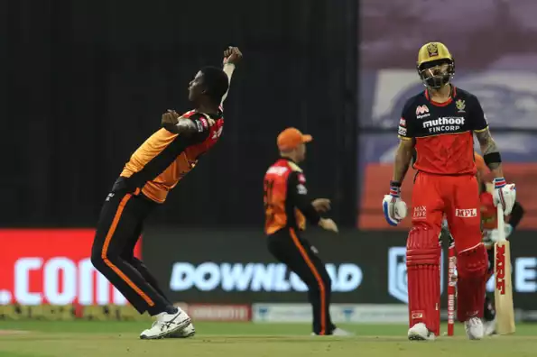

RCB's batting ran out of steam in the second half of the ipl
Royal Challengers Bangalore's IPL 2020 campaign came to an end after losing to Sunrisers Hyderabad in the Eliminator in Abu Dhabi. On a slow track, RCB could muster just 131 with SRH chasing down the target in the final over.
In a game where fortunes swung back and forth, RCB perhaps found themselves 15-20 runs short of a winning score. Simon Katich, RCB's coach, felt that the side struggled to maintain the required tempo with the bat during the second half of the tournament, which eventually hampered their progress. However, he also praised SRH for keeping the lid on the scoring rate with tight bowling.
Despite getting knocked out, RCB could take quite a few positives from the tournament. Devdutt Padikkal showcased his potential at the top of the order and finished with 473 runs. Katich was pleased with Padikkal's ability to consistently provide a solid platform at the top of the order. He also commended the duo of Washington Sundar and Mohammad Siraj for putting up some good performances.
One of the areas of concern for RCB was that the middle and lower order batsmen found it difficult to press the accelerator pedal as and when required. "I think we need to get more out of our batsmen - probably in the middle to lower order. Just the consistency, which is never easy for those roles. They are tough roles to play when you are coming out under pressure trying to find the boundary or score 10 an over. We've given few of the guys good opportunities throughout the tournament to see what they can do and hopefully that will continue in the future," Katich said.
 Ipl 2020
Ipl 2020